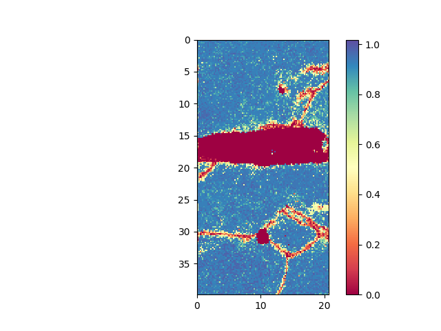
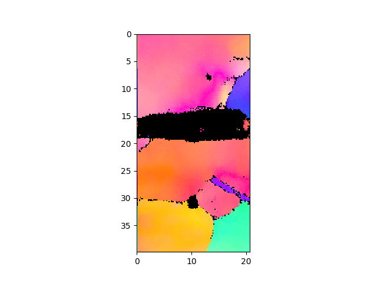
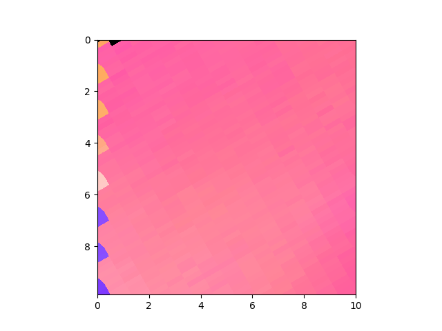
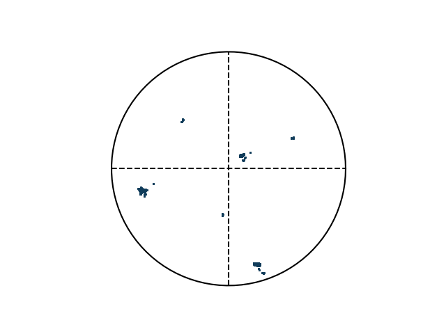

Detailed Description
Tutorials for ebsd.
Tutorials
Example: Read EBSD data and plot the ND IPF
- plot confidence index (CI). Mask out all points with a CI less than 0.1. Initially all points are present in the mask, i.e. they are shown. By masking out points, these are removed from the mask.
- plot inverse pole figure in normal direction
- play with different options (1024pixel to see speed of plotting)
- setVMask: for fast plotting;
- pole figure (PF) in the [1,0,0] direction. The OIM software has the top left corner has coordinate origin
>>> from ebsd import EBSD
>>> e = EBSD("Examples/EBSD.ang")
Load .ang file: Examples/EBSD.ang
Read file with step size: 0.2 0.2
Optimal image pixel size: 103
Number of points: 23909
>>> e.plot(e.CI)

>>> e.maskCI( 0.1 ) >>> e.plot( e.CI )

>>> e.plotIPF()

>>> e.plotIPF(1024)

>>> e.addScaleBar()

>>> e.setVMask(4) # use only every 4th point, increases plotting speed >>> e.plotIPF(1024)

>>> e.cropVMask(0,0,10,10) # show only a section of the image, increases plotting speed >>> e.plotIPF(1024)

>>> e.plotPF([1,0,0])

>>> e.plotPF([1,0,0],points=True)


Example: Interaction with OIM Software to update grain information from different file
How to export txt-file from OIM that can be read:
- Partition->export-> grain file -> use "grain file type 1" (saves a txt file)
- Partition->export-> partition data -> save as .ang
Warning: This is example input file does not exist, anymore. Not tested
> e = EBSD("Examples/Test.ang")
> e.loadTXT("Examples/TestB.txt")
> e.maskCI(0.1)
> e.removePointsOfMask()
> e.writeANG("ebsd.ang")Which can then be read in OIM again
Compare with OIM software and verify pole-figure
>>> import numpy as np
>>> from ebsd import EBSD
>>> from ebsd_Orientation import Orientation
>>> e = EBSD("Examples/EBSD.ang")
Load .ang file: Examples/EBSD.ang
Read file with step size: 0.2 0.2
Optimal image pixel size: 103
Number of points: 23909
>>> e.maskCI( 0.001 )
>>> e.plotIPF('ND')
>>> e.cropVMask(xmin=18,ymin=12,ymax=17)
>>> e.plotIPF('ND') Inspect the original data at x,y = 20.1,14.38 um
line 8785 from EBSD.ang
5.55763 2.18448 3.83349 20.10000 14.37602 3653.496 0.482 0 1 1.104
>>> print (np.degrees([ 5.55763, 2.18448, 3.83349])) [318.4287431 125.16148443 219.64279781] >>> e.cropVMask(xmin=20,xmax=20.2,ymin=14.3,ymax=14.4) >>> e.y[e.vMask] #verify y: correct if rounding accounted for array([14.37602]) >>> angle = e.quaternions[e.vMask].asEulers().flatten() >>> print (np.round(np.degrees(angle))) #convert to only positive values [ -42. 125. -140.] >>> print (np.round(np.degrees(angle)+np.array([360,0,360]))) [318. 125. 220.]
Plot correct unit cells and pole-figures using the orientation-class
>>> o = Orientation(Eulers=angle, symmetry="cubic") >>> o.toScreen() #first item is one looking for >>> o.plot(plot2D='up-left')

>>> o.plot(poles=[1,0,0],plot2D='up-left',scale=1.5)

Create artificial ebsd pattern to check PF
>>> e = EBSD('void318.|125.|219.6|0|2')
Void mode 318.|125.|219.6|0|2
Euler angles: 5.55 2.18 3.83 | distribution: 0.0 | numberPerAxis: 2.0
Read file with step size: 1.0 1.0
Optimal image pixel size: 1
Number of points: 4
>>> e.plotPF(size=5)

>>> e.plotPF(points=True)

Finally, inspect pole-figure of data and compare OIM software, mTex and this python code
>>> e = EBSD("Examples/EBSD.ang")
Load .ang file: Examples/EBSD.ang
Read file with step size: 0.2 0.2
Optimal image pixel size: 103
Number of points: 23909
>>> e.maskCI( 0.001 )
>>> e.plotPF(size=1)
>>> e.plotPF()
>>> e.plotPF(proj2D='down-right')

- .bmp (left): low color number when exporting from external window. .png works (right)
- Explicitly select x-axis as North and z-axis as outOfPlane; normal orientation has different result, although it should be the same
- Explicitly select x-axis as North and z-axis as outOfPlane; normal orientation has different result, although it should be the same
Average orientation in file, does not make sence for this multi-grain case
averaging takes lots of time: Orientation.average()
>>> from ebsd_Orientation import Orientation
>>> from ebsd import EBSD
>>> Orients = []
>>> e = EBSD("Examples/EBSD.ang")
Load .ang file: Examples/EBSD.ang
Read file with step size: 0.2 0.2
Optimal image pixel size: 103
Number of points: 23909
>>> for i in range(len(e.x)):
... Orients.append(Orientation(quaternion=e.quaternions[i], symmetry="cubic"))
>>> avg = Orientation.average( Orients)
>>> print ("Average orientation",np.round(avg.asEulers(degrees=True, standardRange=True),0)) Compare the three software for bicrystal
Python code
>>> from ebsd import EBSD
>>> e = EBSD("Examples/EBSD.ang")
Load .ang file: Examples/EBSD.ang
Read file with step size: 0.2 0.2
Optimal image pixel size: 103
Number of points: 23909
>>> e.cropVMask(ymin=35)
>>> e.addSymbol(5,37, scale=2)

>>> e.plotIPF("RD",fileName="pythonRD.png")
>>> e.addSymbol(5,37, scale=2)
>>> e.addSymbol(18,37, scale=2,fileName="pythonRD.png")

>>> e.plotIPF("TD",fileName="pythonTD.png")
>>> e.addSymbol(5,37, scale=2)
>>> e.addSymbol(18,37, scale=2,fileName="pythonTD.png")

>>> e.plotPF( fileName="pythonPF.png")
please, note, the last image is not colored. This is not implemented yet. TODO
how to run mTex
>> startup_mtex
>> import_wizard('ebsd')
% and select EBSD.osc
% select plotting convention 5: x-to-right; y-to-bottom
% select "convert Euler 2 Spacial Referecence Frame"
% save to workspace variable
>> csCopper = ebsd('Cu').CS;
>> plot(ebsd('Cu'),ebsd('Cu').orientations,'coordinates','on')
>> cS = crystalShape.cube(ebsd.CS)
>> region = [0 35 50 50];
>> ebsdC = ebsd(inpolygon(ebsd,region))
>> plot(ebsdC('Cu'),ebsdC('Cu').orientations,'coordinates','on')
>> plotPDF(ebsd('Cu').orientations, Miller({1 0 0},csCopper))
% select xNorth zOutOfPlane as axis in mTex
>> plotPDF(ebsd('Cu').orientations, Miller({1 1 1},csCopper))
>> odf = calcODF(ebsd('Cu').orientations)
>> plotPDF(odf,Miller({1 0 0},csCopper) )
If separate window: save as png, because bmp colorscale is broken
- if not separet window: save as bmp, because png crops sections off select xNorth zOutOfPlane as axis in mTex
- compare to original which should be the same
Data that exists and can be used for plotting in plot:
- OIM software:
- e.phi1, e.PHI, e.phi2 : Euler angles saved as quaternions
- e.x, e.y : x,y coordinates
- e.IQ, e.CI, e.phaseID : Image Quality, confidence index (bad=0 ... good=1) , phase id
- e.SEMsignal : SEM signal
- e.fit :
- Oxford:
- bc: band contrast
Hints for developers
- run ./verifyAll.py after all changes to verify the code and create the html-documentation
- git commands
- git add -A
- git gui
- git commit -m "solved symbolic link issue"
- git push -u origin master